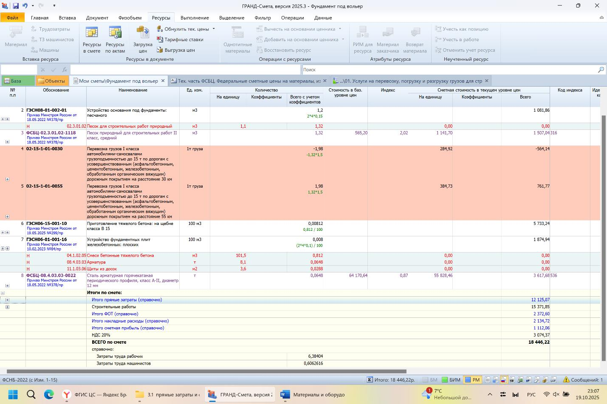

Сметные цены на материалы и оборудование

Большая часть сметной стоимости приходится на материалы и оборудование. Сметные расценки включают основные материалы, заданные проектом, и вспомогательные, требуемые технологией производства работ (например, вода, газ, ветошь), которые обычно не выделяются отдельно.
Согласно общим положениям ФСБЦ 81-01-2022 «Федеральные сметные цены на материалы, изделия, конструкции и оборудование в базисном уровне цен» учитываются следующие затраты:
- базисные сметные цены, включающие покупку и доставку материалов и оборудования с производителя или поставщика на приобъектный склад;
- транспортные расходы на автодоставку грузов до 30 км с учётом полной массы (брутто);
- заготовительно-складские расходы, установленные в процентах от стоимости материалов и оборудования франко-приобъектный склад: 2% для строительных материалов (кроме металлических конструкций, воды, пара и электроэнергии), 0,75% для металлических конструкций, 0% для воды, пара, электроэнергии и сжатого воздуха, 1,2% для оборудования.
Что такое «ФРАНКО»
Термин «франко» означает конкретное место доставки товара, указанное в договоре, до которого продавец доставляет и несет все расходы и ответственность. После передачи товара в этой точке ответственность переходит покупателю. Поэтому стоимость материалов и оборудования франко-приобъектный склад включает отпускную цену производителя, упаковку, транспортировку, погрузочно-разгрузочные работы, надбавки посредников и заготовительно-складские расходы.
Если доставка материала происходит не в пределах 30 км, а, например, на 55 км, то в смету включается расценка на перевозку на расстояние 55 км с вычетом учтенной стоимости за первые 30 км.

Небольшая сумма, но и такие терять в сметах не стоит.
Если у нас проектом предусмотрен материал/оборудование, отсутствующий в ФСНБ, то в соответствии с п.13 Приказа 421, нам необходимо сделать конъюнктурный анализ (КА) на каждый такой материал, на основании не менее 3-х коммерческих предложений/прайсов/скриншотов экрана поставщика и т.д., и соответственно, включить в смету по наименьшему ценовому показателю из КА. Эту тему мы рассмотрим в другом уроке.